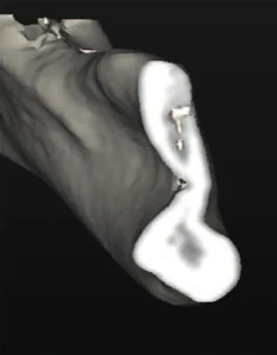
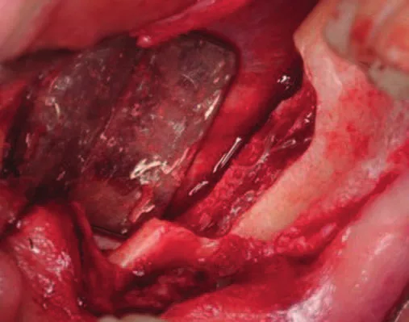

نسخه استخراجشده؛ ترجمه یا تأیید علمی انجام نشده است. وضعیت: captured
اگر فقط یک عدد از این درس را به خاطر بسپاری، این باشد:
«پس از ۱۸ ماه، بیش از ۵۰ درصد بیمارانی که محل برداشت سیمفیز داشتند هنوز حس تغییریافته داشتند.»
این جمله را دو بار بخوان. یک و نیم سال بعد. بیش از نیمی از بیماران. این دیگر «عارضهی گذرا»یی نیست که بشود نادیده گرفت؛ در گروه راموس، پس از ۱۸ ماه هیچ بیماری علامتی نداشت.
این تغییر حس معمولاً دردناک نیست: بیمار دندانهای قدامی پایین را کرخت یا «چوبی» حس میکند، و ممکن است موقت یا دائمی باشد. علتش بریده شدن شاخهی انسیزال عصب آلوئولار تحتانی هنگام تراشیدن مغز استخوان اطراف محل برداشت است؛ کمبود حس لب و چانه پس از گرفت سیمفیز بسیار نادر است.
و همین عدد باید در رضایت آگاهانه بیاید. بیماری که این را نمیداند، نمیتواند انتخاب آگاهانه کند.
راه کاهش خطر: «برداشت تهاجمی بخش مدولاری سیمفیز باید در جنبههای فوقانی تا حد امکان به حداقل برسد تا آسیب به مسیرهای عصبی ناحیه محدود شود.»
یعنی عمق و ارتفاع برداشت را کنترل کن — بهویژه در بالا، جایی که مسیرهای عصبی میگذرند. لبهی فوقانی برش هم باید دستکم ۵ میلیمتر زیر اپکس دندانها باشد تا دندانهای قدامی آسیب نبینند.
عارضهی دوم — شکستگی پلیت سیمفیز. نمونهی کلاسیکش: «پلیت سیمفیزیال شکسته ناشی از انتخاب ضعیف بیمار برای گرفت سیمفیز».
به عبارت «انتخاب ضعیف بیمار» دقت کن. این عارضه نه به تکنیک، بلکه به تصمیم پیش از جراحی برمیگردد. و همین با عنوان بخش میخواند: «حجم ناکافی استخوان سیمفیز برای گرفت».
عارضهی سوم — ریشهی کانینها. «اگر کاسپیدها بیشازحد بهسمت اپیکال امتداد یافته باشند، گرفت سیمفیز میتواند در دو بلاک برداشته شود تا تروما به کاسپیدها به حداقل برسد.»
یک راهحل هوشمندانه: بهجای یک بلاک بزرگ که ریشهها را تهدید میکند، دو بلاک جداگانه که از ریشهی بلند کاسپیدها فاصله میگیرند.
و این یعنی موقعیت ریشهی کانینها باید پیش از تصمیم به گرفت سیمفیز ارزیابی شود، نه هنگام باز کردن فلپ؛ CBCT جای دقیق اپکسها را نشان میدهد.

مقایسه روشن است: «در مقایسه با ناحیهی سیمفیز، برداشت استخوان از راموس معمولاً به عوارض پس از عمل کمتری میانجامد.»
و این را با عدد بیش از ۵۰ درصد حس تغییریافته پس از ۱۸ ماه در سیمفیز کنار هم بگذار؛ در گروه راموس در همان زمان هیچ بیماری علامت نداشت.
اما راموس محدودیت خودش را دارد: «محدودیتهای آناتومیک راموس در این ناحیه، ضخامت گرفت را به ۳ تا ۴ میلیمتر محدود میکند.»
پس انتخاب یک معاوضه است، نه یک برتری مطلق: راموس کمعارضهتر است ولی کمتر میدهد. اگر نقص بیش از ۴ میلیمتر استخوان میخواهد، برداشت از راموس اندیکاسیون ندارد؛ بلاک بزرگتر به حریم ساختارهای حیاتی اطراف میرسد.
خطر اصلی راموس — عصب آلوئولار تحتانی. تصویرش را ببین: «محل بزرگ گرفت دهنده که به اکسپوز شدن عصب آلوئولار تحتانی با اختلال حسی همراه انجامیده» — با فلشی که مستقیماً به عصب اشاره میکند.
خطر وقتی بسیار بیشتر است که کانال آلوئولار تحتانی ۱۰ میلیمتر یا کمتر از خط مایل خارجی فاصله داشته باشد. و برشهای راموس در مجاورت کانالاند: «تصویر رادیولوسنت که برشهای گرفت راموس را در ارتباط با کانال آلوئولار تحتانی نشان میدهد».
ابزار تصمیم — CBCT. و اینجا دقیقاً معلوم است CBCT چه دو چیزی را همزمان روشن میکند:
«تحلیل CBCT میتواند تصویر روشنی از اینکه محل راموس از منظر پیشگیری از آسیب عصبی چقدر قابلاستفاده است در اختیار درمانگر بگذارد، و همچنین شانس به دست آوردن حجم کافی استخوان برای پیوند را.»
دو پرسش، یک تصویر: «آیا امن است؟» و «آیا کافی است؟» — و هر دو باید پیش از تصمیم پاسخ بگیرند.
و بدان که همهی بیماران کاندید نیستند: «با این حال، بیمارانی هستند که محدودیتهای آناتومیک، آنها را کاندیدهای ضعیفی برای برداشت گرفت راموس میکند.» — عنوان بخش هم همین است: «کاندید ضعیف راموس».
و یک قاعدهی جراحی که در هر دو محل صدق میکند: هشدار: «متهی جراحی که با عروق خونی، اعصاب یا ممبران سینوس تماس پیدا کند میتواند ساختارهای حیاتی مجاور را ببرد یا آسیب بزند.»
و دربارهی دسترسی: «رتراکشن کامل فلپ باکال، دسترسی لازم برای اینسرت پیزو در ناحیهی اپیکال را هنگام برداشت بلاک گرافت فراهم میکند.» — یعنی دسترسی ناکافی، خودش یک عامل خطر است.
جمعبندی انتخاب: سیمفیز حجم بیشتر، عارضهی حسی بسیار بیشتر؛ راموس حجم محدودتر (۳ تا ۴ میلیمتر)، عوارض کمتر، ولی مجاورت کانال. و در هر دو، CBCT پیش از تصمیم.
